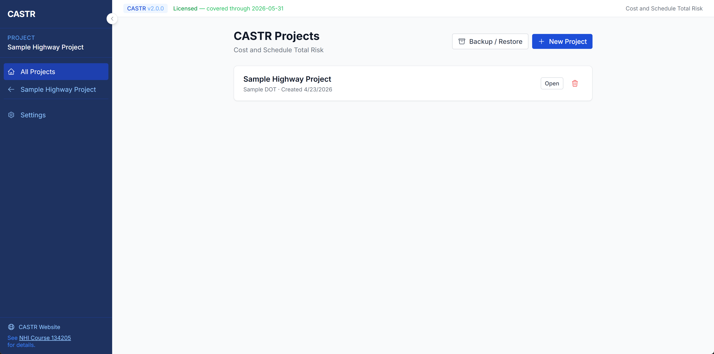
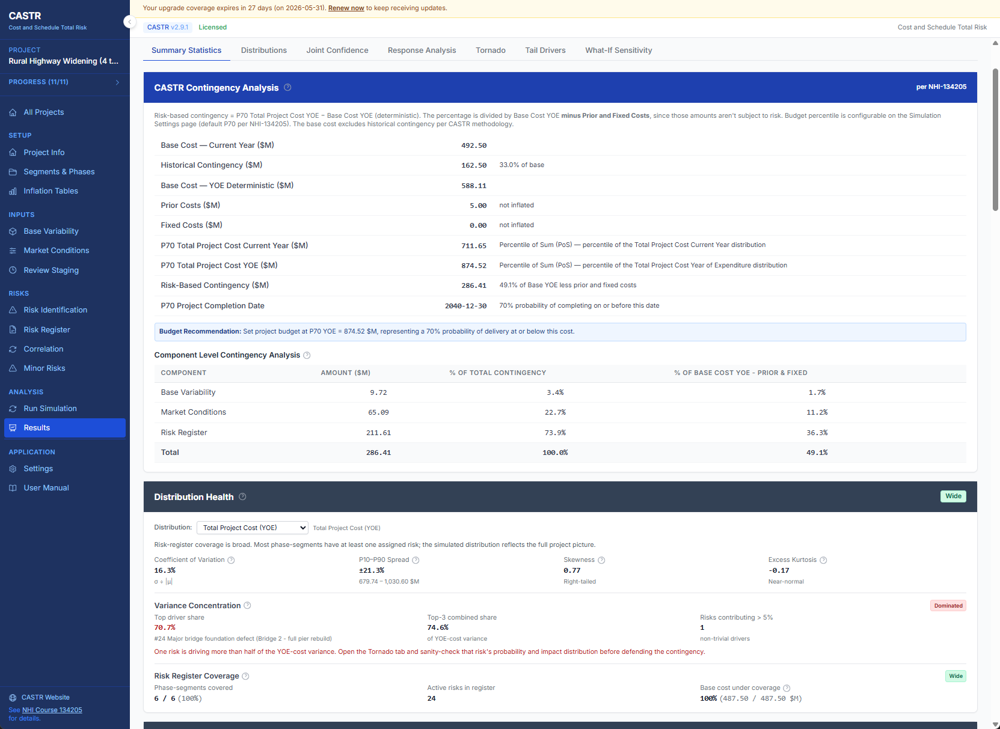
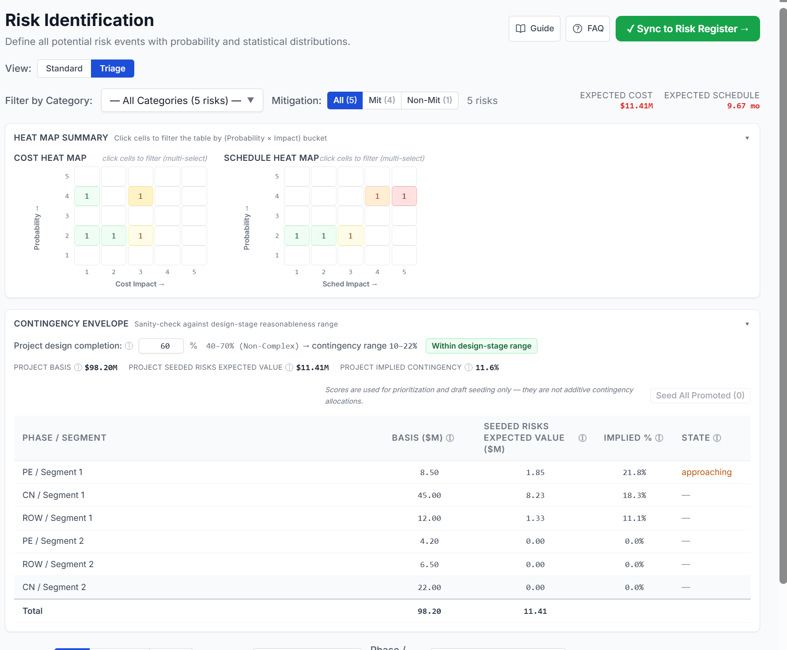
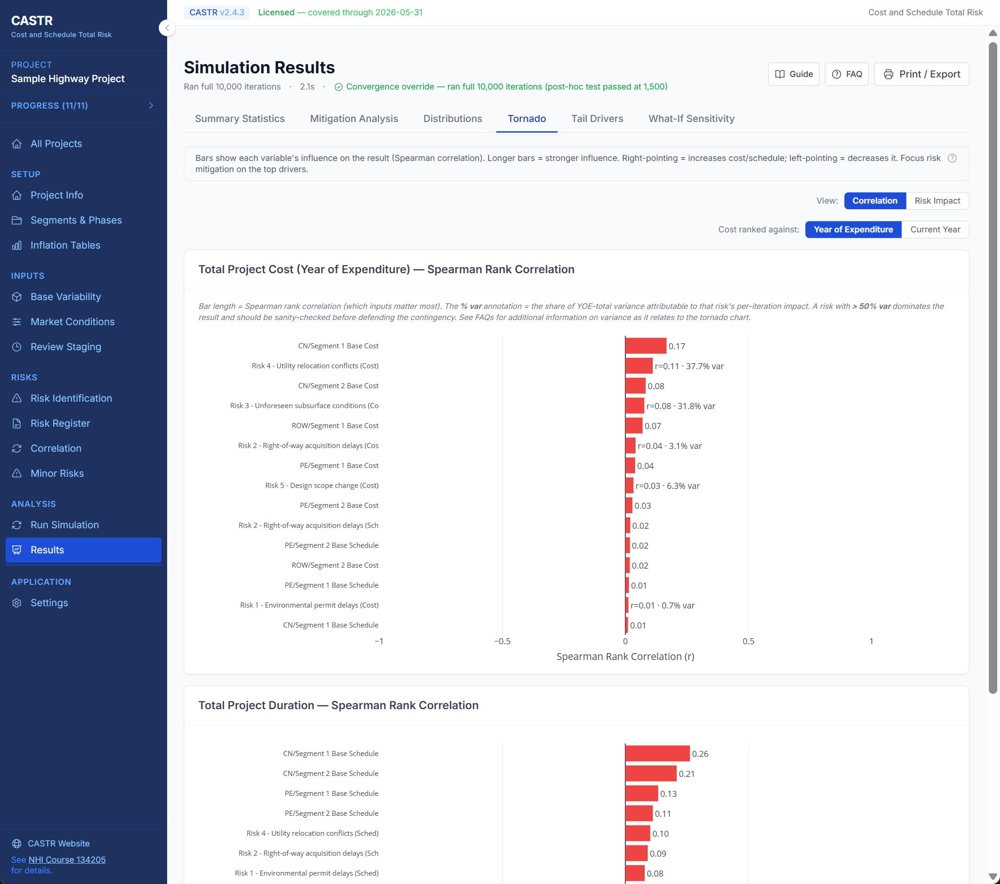
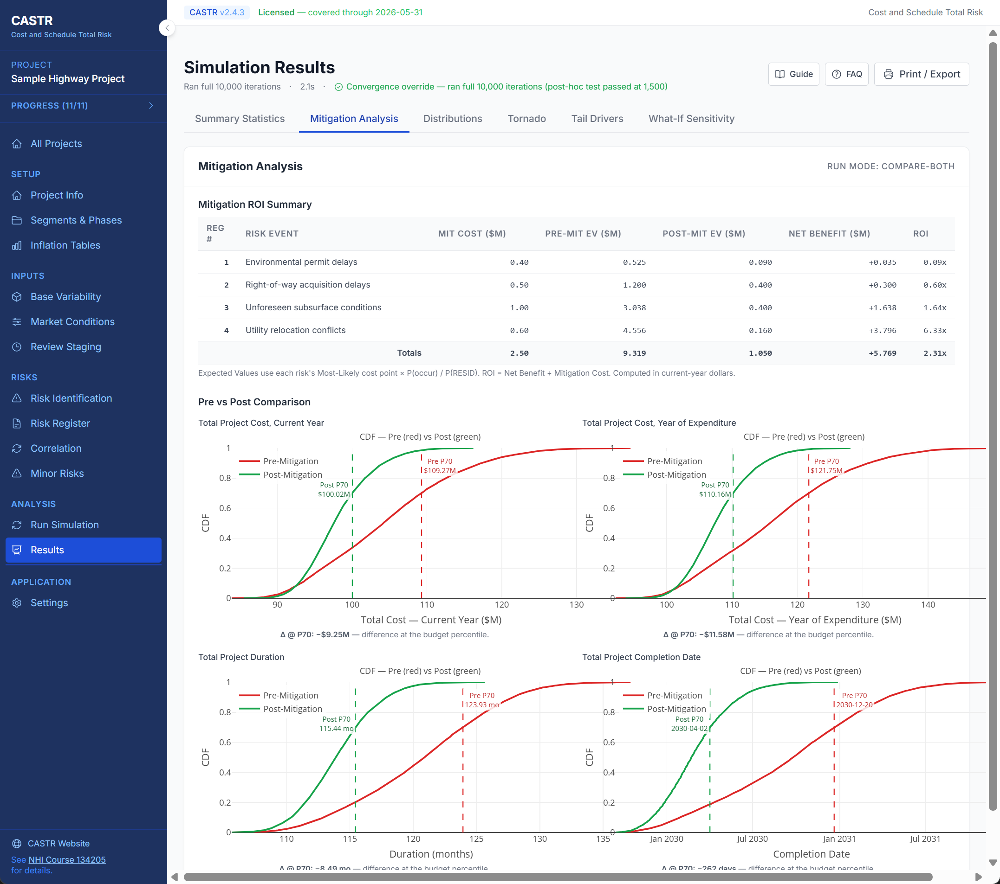
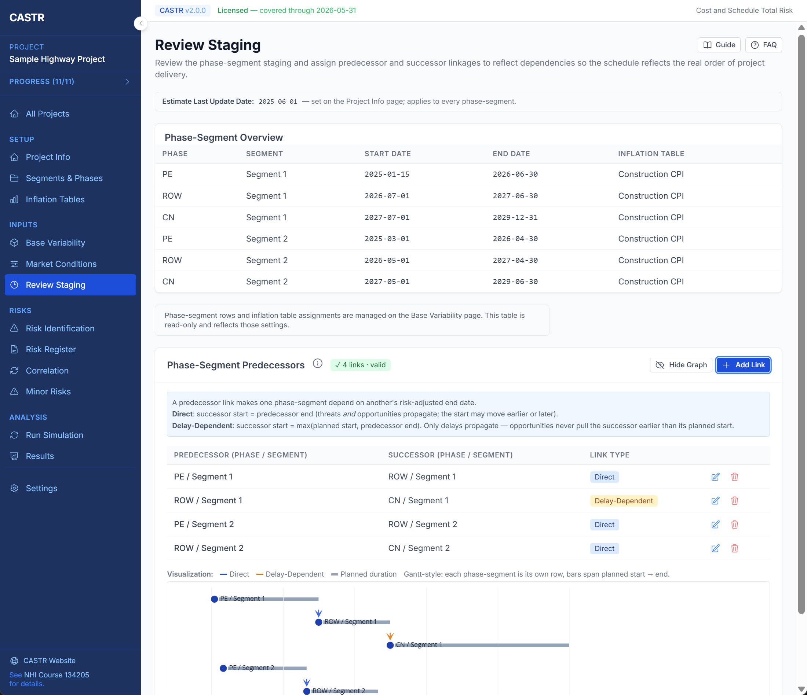
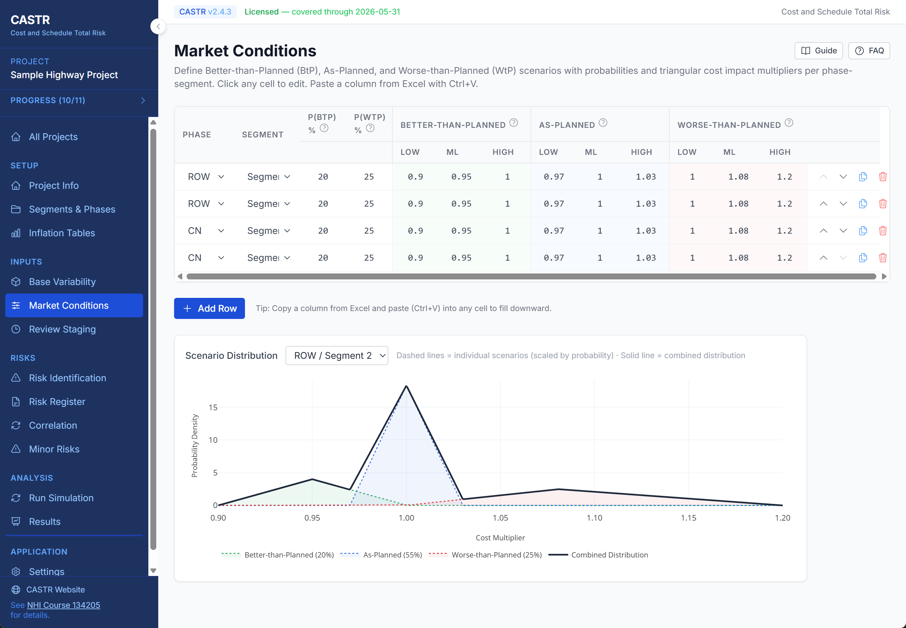
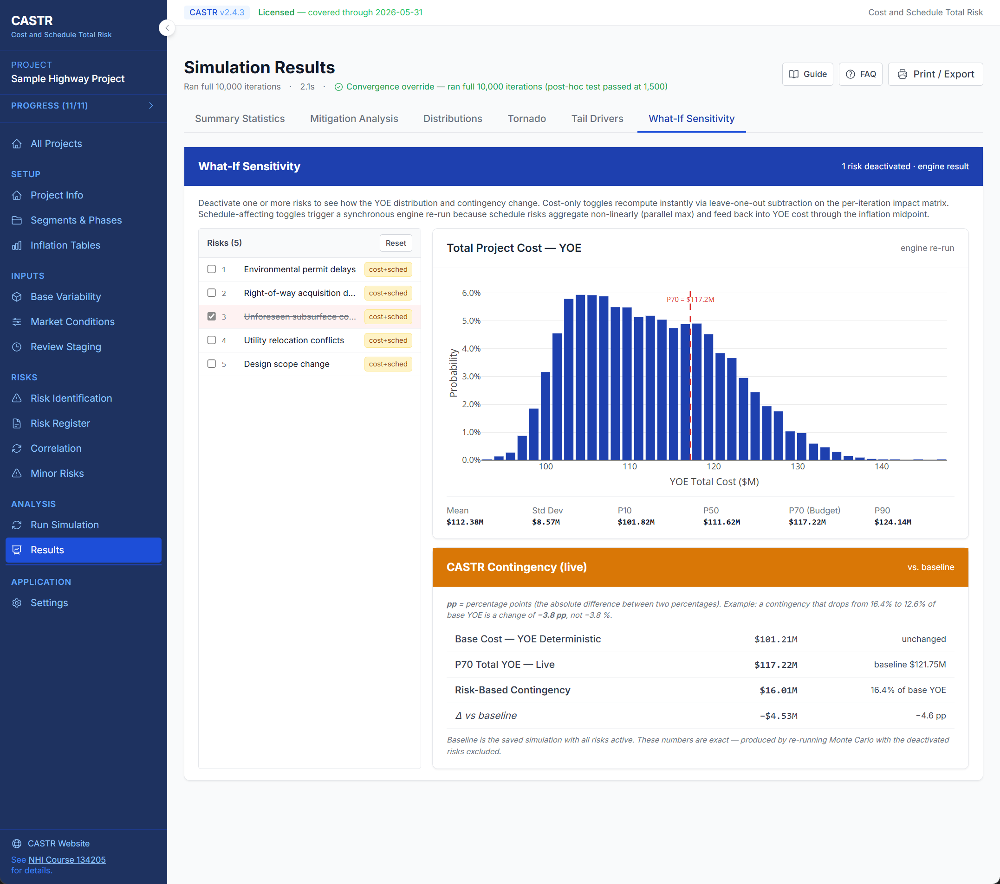

See CASTR in Action
A modern, browser-based interface that's powerful yet intuitive. All data stays local on your machine.
Project Management
Organize multiple projects with an intuitive dashboard. Create, duplicate, and manage projects with full backup and restore capability.
- Create unlimited projects (licensed)
- Export and import project backups
- Duplicate projects for scenario analysis
- Organized sidebar navigation

Risk Identification
Define risk events with five distribution shapes, dependency types, and detailed documentation. Standard and Triage views on the same data for full edit or rapid 1–5 scoring workflows.
- Triangular, BetaPERT, Uniform, Normal, and Constant distributions with live preview
- Mutually inclusive, mutually exclusive, and project-wide dependency modeling
- Seed Distribution auto-generates quantitative inputs from triage scores
- SME-reviewed tracking flags which seeded values have been ratified by the workshop

Contingency Analysis & Diagnostics
Get clear, defensible budget recommendations with NHI-134205 contingency breakout, inflation sensitivity scenarios, and component analysis.
- NHI-134205 contingency with prior/fixed cost breakout and inflation-scenario comparison
- Component Analysis decomposes contingency into Base Variability, Market Conditions, and Risk Register contributions
- Distribution Health card with coverage traffic light, variance concentration, and skewness/kurtosis
- Six results tabs: Summary Statistics, Mitigation Analysis, Distributions, Tornado, Tail Drivers, What-If Sensitivity

Triage Scoring & Heat Maps
Rapidly score risks in workshop sessions using a 1–5 probability/cost/schedule framework. Two 5×5 heat maps give an instant visual snapshot of where portfolio risk concentrates, so the team can focus discussion on the highest-priority items.
- 1–5 rapid scoring with Combined Priority Score ranking
- Click heat map cells to filter; stack with category and phase-segment filters
- Bulk Seed All Promoted with projected envelope preview before commit
- Contingency Envelope card benchmarks risk coverage against AASHTO/design-stage bands per project complexity tier

Sensitivity & Tail Drivers
Pinpoint exactly which risks matter most with tornado charts and tail driver analysis, so teams can focus mitigation where it counts.
- Spearman rank correlation tornado charts
- Top 3 favorable and adverse tail drivers
- Fire rate and excess contribution metrics
- Phase-segment drill-down capability

Risk Mitigation & ROI Analysis
Go beyond risk identification. Define mitigation actions for each risk, model the residual probability and impact, then run pre- vs. post-mitigation simulations to see exactly how much your mitigation program is worth.
- Per-risk mitigation cost, owner, due date, and residual distributions
- Compare Both mode overlays pre/post CDF curves side by side
- ROI summary table with net benefit and return ratio per risk
- Budget-percentile delta markers on comparison charts

Review Staging & Dependencies
Define how phase-segments relate to each other with predecessor/successor linkages. Choose Direct or Delay-Dependent rules to control how schedule changes propagate through the project network.
- Phase-segment overview with start/end dates and inflation table assignments
- Direct links: both delays and improvements propagate downstream
- Delay-Dependent links: only delays propagate, improvements are blocked
- Gantt-style visualization of the dependency network

Market Conditions & Gap Detection
Model Better-Than-Planned, As-Planned, and Worse-Than-Planned market scenarios per phase-segment. Built-in gap detection warns you when scenario ranges don't overlap, preventing probability dead zones in the simulation.
- Triangular cost multipliers for each market scenario
- Scenario distribution chart shows individual and combined probability density
- Automatic gap detection with actionable fix guidance
- Paste from Excel for rapid data entry

What-If Sensitivity Analysis
Deactivate one or more risks and instantly re-run the simulation to see exactly how the YOE distribution and contingency shift. Understand each risk's true dollar contribution to the budget recommendation.
- Toggle individual risks on/off with one click
- Live YOE distribution chart updates with the deactivated scenario
- Side-by-side contingency comparison: live vs. baseline
- See exact percentage-point and dollar impact per risk

Simulation Settings & Run Modes
Fine-tune the Monte Carlo engine with configurable iteration counts (100–100,000), convergence tolerance, and random seed control. Three run modes let you analyze pre-mitigation, post-mitigation, or compare both side by side.
- Convergence-based early termination with half-vs-half stability testing
- Pre-Mitigation, Post-Mitigation, and Compare Both modes
- Inflation Sensitivity Scenarios with bit-for-bit comparable cached draws
- Configurable budget percentile (P70 default per NHI-134205)